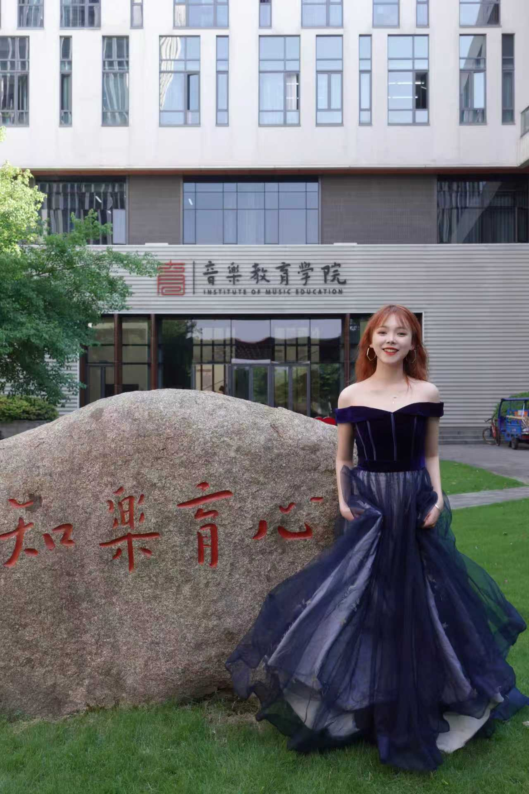
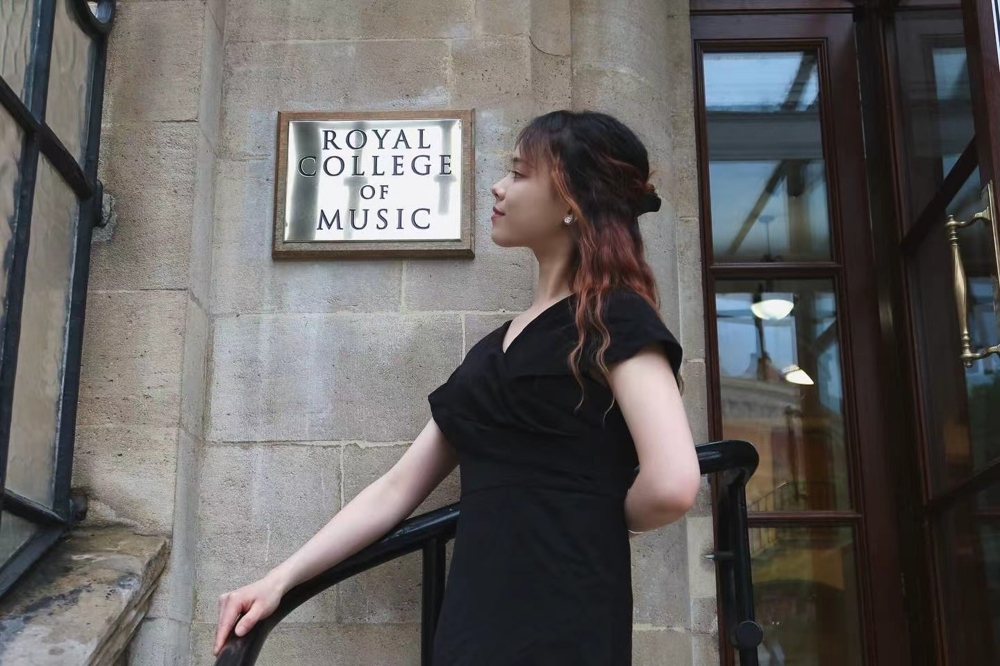

Yizhe Lin is an opera répétiteur and collaborative pianist active in both China and the United Kingdom. She has worked closely with conductors Mark Austin and Paul Wingfield, as well as directors Lysanne van Overbeek and Rebecca Meltzer, taking part in major opera productions including Orphée aux enfers, Le nozze di Figaro, Ariadne auf Naxos, and Falstaff. With a keen sense of collaboration, she has received high praise in masterclasses with Pauliina Tukiainen and Markus Hadulla for her musical sensitivity and precise interpretation.
Yizhe is currently pursuing an Artist Diploma in Opera Repetiteur at the Royal Birmingham Conservatoire, supported by a substantial scholarship. Prior to this, she graduated with Distinction from the Royal College of Music, where she studied with Head of Collaborative Piano Simon Lepper, distinguished coach Roger Vignoles, mezzo-soprano Patricia Bardon, and BBC staff accompanist Elizabeth Burley. Her interdisciplinary training in both piano and vocal studies provides her with a unique perspective, enabling a strong sense of breath and deep literary understanding in her interpretation of vocal repertoire.
In addition, Yizhe is actively engaged in diverse artistic practices. She is a collaborative artist with the Birmingham Opera Company and a signed artist with Hemiola Music, and has been appointed as an “Overseas Dandelion Ambassador” by the Chinese Culture Institute, promoting cross-cultural exchange on international platforms such as the Birmingham Light Festival. From London and Birmingham to Shenzhen and Xiamen, she continues to explore the boundaries of collaborative piano through recitals and interdisciplinary performances with singers and instrumentalists.


"With a keen sense of collaboration, she interprets the repertoire with remarkable precision and profound musical sensitivity."
"啊哒啊哒，啊哒啊哒，啊哒哒哒哒，哒哒啊哒哒哒"
"An exceptional repetitiveur with a distinct, deeply engaged artistic practice and an unwavering dedication to dramatic pacing."
For bookings, collaborations or inquiries, please use the links below.